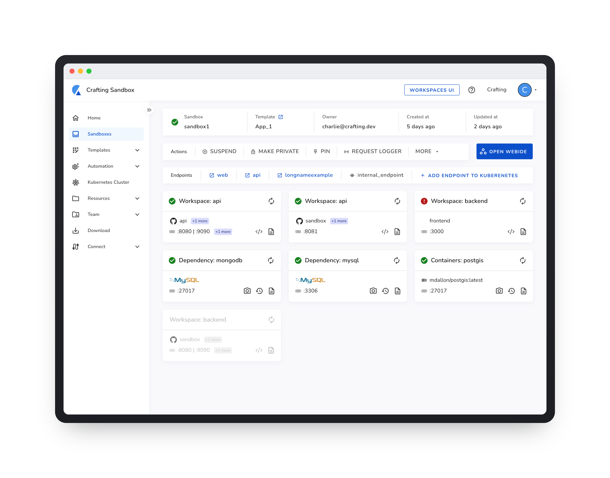

Product design, systems-first.
I'm Elizabeth Lin, a Product Designer working across Microsoft Edge, cross-platform design systems, and the theming infrastructure that keeps them consistent. That work runs from component tokens up to the products people use every day.
Open to full-time roles. Get in touch.
Product design, systems-first.
I'm Elizabeth Lin, a Product Designer working across Microsoft Edge, cross-platform design systems, and the theming infrastructure that keeps them consistent. That work runs from component tokens up to the products people use every day.
Open to full-time roles. Get in touch.
RECENT WORK
01
Microsoft Edge
Design systems · Tokenization
Redefining Edge's semantic token system and tokenizing every component in the browser.
View case study →02
Crafting Sandbox
Developer tools · Web app
A single-machine interface for cloud dev environments, without disrupting existing multi-service users.
View case study →
02
Edge design systems
Components · Upstream alignment
Deciding which parts of a browser are worth owning, and which should go back upstream.
02
Crafting Sandbox
Developer tools · Web app
A single-machine interface for cloud dev environments, without disrupting existing multi-service users.


03
NaSYMSurgical
Mobile product · Medical UX
Real-time nasal symmetry measurement for rhinoplasty, on hardware surgeons already carry.